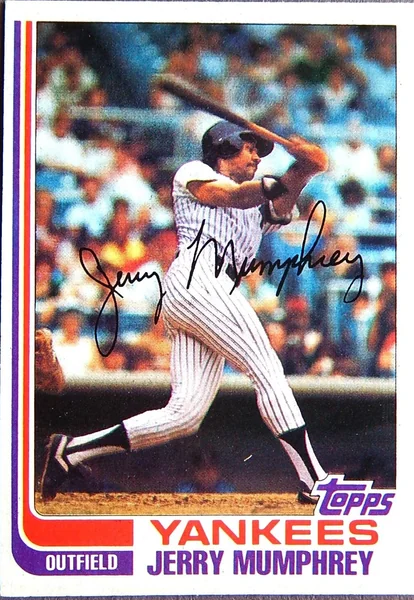
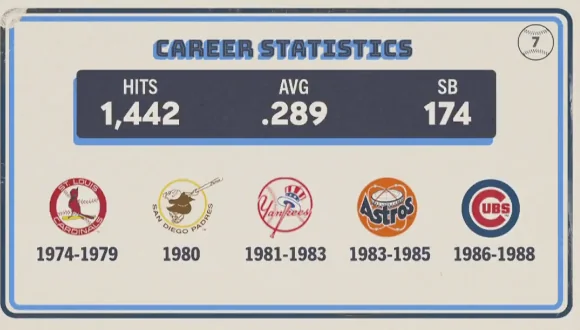

Jerry Mumphrey
Career Highlights & Facts
(Facts are AI-generated and may require verification)
- Before arriving in the Bronx, this outfielder was the one who recommended the hit song 'We Are Family' to his teammates, a track famously associated with a different club's championship run.
- He was acquired by the Yankees in a high-profile trade that sent four players to the West Coast, and he was immediately hailed as the team's best center fielder since a legendary speedster departed the pinstripes.
- Despite being a career switch-hitter, he faced intense pressure from the Yankees' owner to 'get tough' during a period of team instability, leading to his eventual departure from New York.
Would you like to find out more about Jerry Mumphrey?
Career Totals
| WAR | AB | H | HR | BA | R | RBI | SB | OBP | SLG | OPS | OPS+ |
|---|---|---|---|---|---|---|---|---|---|---|---|
| 22.3 | 4993 | 1442 | 70 | .289 | 660 | 575 | 174 | .349 | .396 | .745 | 108 |
Statistics via Baseball-Reference.com
The Original Clue
